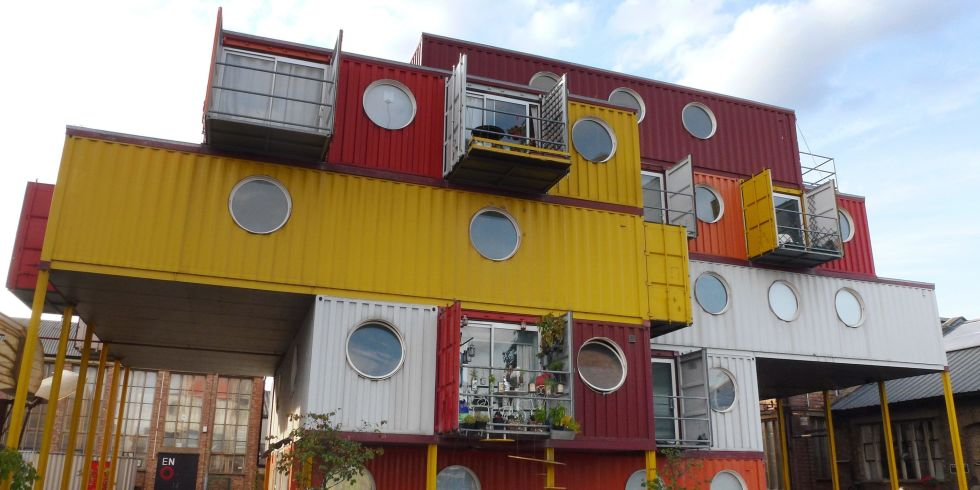
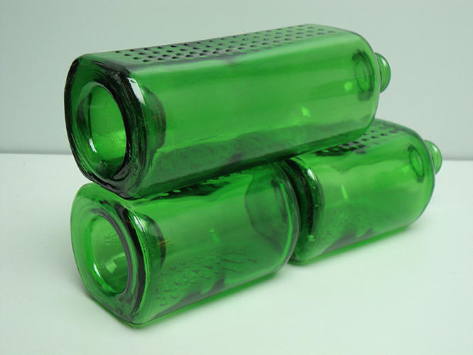

Container Houses
A unique example of recycling takes the form of low-budget housing. Companies like Off Grid World are promoting what are known as Shipping Container Homes. This trend is really cheap and really green. It's pretty self-explanatory. A company buys old shipping containers and turns them into small homes or offices. These are perfect for cabins. Architects inspired by this create full size homes and some have even drawn up designs for hotels.

Heineken WOBO (World Bottle)
In 1963, Alfred Heineken, third generation patriarch of the famous brewing family, invented the WOBO. It was a beer bottle that doubled as a brick once it was empty. The bottles fit together, top to bottom and can then be mortared to create small homes or sheds. He came up with the idea when he was visiting the island of Curacao. There, he saw numerous people living in poverty and the beaches littered with beer bottles.
The WOBO bottles were all mostly destroyed and the only two structures made out of them are on the Heineken estate in Europe.